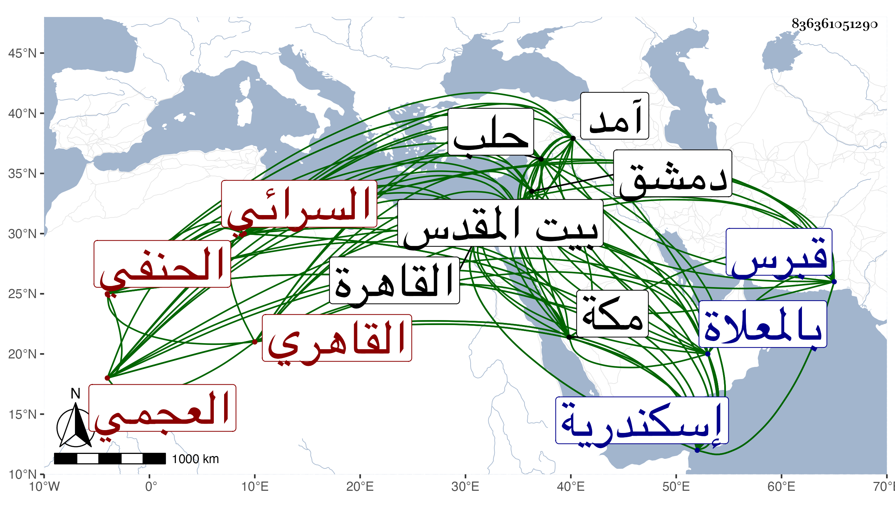

0902Sakhawi.DawLamic.ITO20230111-ara1.EIS1600.836361051290
Biography ID: 836361051290
253
محمد بن أحمد بن أبي يزيد بن محمد المحب أبو السعادات بن الشهاب بن الركن السرائي بفتح المهملتين وألف مدينة ببلاد الدست العجمي الأصل القاهري الحنفي سبط الشمس الأقصرائي والد البدر محمود والأمين يحيى ، ولذا يعرف بابن بنت الأقصرائي وأبوه بمولانا زاده . ولد في سابع عشرى ذي الحجة سنة تسعين وسبعمائة بالقاهرة ونشأ بها في كفالة جده لأمه لكون أبيه مات وهو صغير فحفظ القرآن وكتبا وتفقه بخاله البدر المشار إليه وأخذ عنه العربية وأصولهم ايضا وبالسراج قاري الهداية قرأ عليه الكنز بتمامه وبابن الفنري سمع عليه من أول تلخيص الجامع الكبير وأبوابه لمحمد بن أحمد بن عباد بن ملكداد الخلاطي وأخذ عنه في الأصول قطعة من أوائل العضد وتوضيح صدر الشريعة ، وكذا من أوائل فصول البدائع في أصول الشريعة من تأليفه وقرأ العربية والصرف على أبي عبد الله محمد ابن أحمد بن محمد بن مرزوق المغربي الماضي قرأ عليه مواضع من التسهيل بل قرأ عليه من تصانيفه شرح الخزرجية والبعض من شرح البردة والكثير من تفسير هود وسافر معه إلى إسكندرية ، ولازم العز بن جماعة تسع سنين حتى كان جل انتفاعه به وعنه أخذ جل العلوم ، ومما أخذ عنه من تصانيفه في الحديث شرح مختصر جده البدر لابن الصلاح وشرح أربعي النووي وفي النحو الجامع الصغير وشرح قواعد ابن هشام الكبرى وفي الأصول رسالته التي لخص فيها الإعتراضات الخمسة وعشرين المذكورة في أواخر ابن الحاجب والمنهاج وشرحه للجار بردى ومختصر ابن الحاجب وشرحه لابن المطهر الحلي وجمع الجوامع بتمامها وفي أصول الدين شرح الطوالع للأصفهاني وفي المعاني والبيان شرح التلخيص وما علمت أيهما وفي المنطق رسالته الصغرى وتحرير ابن واصل والرسالة الشمسية وشرحها للقطب الرازي وللمحلي وفي الجدل رسالته الصغرى أيضا وكذلك الرسالة السمرقندية وشرحها للفخر البهشتي ولحميد الدين الشاشي وفي تخريج الفروع الفقهية على القواعد الأصولية التمهيد للاسنوي وفي تخريج الفروع الفقهية على القواعد النحوية الكواكب له أيضا ، وكان الشيخ يحبه ويؤثره لمزيد خدمته وله وشدة ملازمته ، وأخذ أيضا عن البساطي وطريق القوم عن الزين الخوافي وبحث في الهندسة على ابن المجدي وتلا القرآن لأبي عمر وعلى الزين طاهر المالكي مع كونه أسن منه وسمع على ابن أبي المجد وابن الكويك وتغرى برمش التركماني وغيرهم ، وأجاز له عائشة ابنة ابن عبد الهادي والزين المراغي والكمال بن خير التاج بن التونسي وآخرون ، ولازال يدأب في العلوم المنطوق منها والمفهوم حتى تقدم وأذن له العز بن جماعة في إقراء العلوم الماضية لعلمه بعموم الاحتياج إليه والانتفاع به وكتب له خطه بالثناء البالغ وكذا أذن له ابن مرزوق في إقراء ما قراه عليه بل وفي اقراء ما اذن له ابن جماعة في إقرائه والسراج وقال أنه استدل بقراءته لما قرأه على معرفة باقي الكتب المذكورة ، وصار أحد أعلام البلد ومشاهيرهم وكتب على الكشاف حاشية جمع فيها ما رآه من حواشي الطيبي والجار بردى والقطب والتفتازاني وأكمل الدين وإعراب السمين وغيره مع التوفيق بين ما ظاهره الاختلاف من كلامهم وصل فيها إلى آخر سورة النساء وعلى الهداية أيضا حاشية جمعها من شروح خمسة النهاية للسغناقي والكافي على الوافي وشرح الكنز للزيلعي وشرح القوام الإتقاني وشرح أكمل الدين وصل فيها إلى ثلاثة أرباع الهداية وعلى البديع لابن الساعاتي قطعة ، ودرس التفسير بالمؤيدية بعد خاله البدر والفقه والحديث بالصر غتمشية بعد الشمس التفهني المتلقي لهما عن أبيه والفقه فقط بجامع المارداني وقف صرغتمش انتزعه له الأشراف من السعدي بن الديري بالجانبكية حين انتقال خاله الأمين للأشرفية وبالايتمشية مع مشيخة الصوفية بها إلى غيرها من الوظائف وحج غير مرة أولها في حدود سنة خمس عشرة وجاور وسمع هناك على ابن الجزري ، وسافر إلى إسكندرية ودمشق وحلب وآمد فما دونها وغزا مع العسكر لفتح قبرس سنة ثمان وعشرين وزار بيت المقدس ، وحدث وأقرأ الطلبة وهرع إليه الفضلاء للاستفادة ولكن لم يكثروا عنه كخاليه ، وكنت ممن أخذ عنه أشياء ، وأم بالأشراف برسباي مدة أولها قريب من سنة ثلاثين وبعده لكن بالظاهر ثم أستعفي منها وأكب على العبادة والأشغال والتدريس ثم التمس منه الأشراف أينال في أوائل دولته مباشرتها على عادته فأجاب امتثالا ثم أستعفي أيضا ولزم منزله على عادته في الإقراء والعبادة إلى أن توجه للحج سنة تسع وخمسين فعرض له إسهال وهو بقرب مكة فبادر حينئذ وتجشم المشقة حتى سبق الحاج لدخولها بأيام فطاف طواف القدوم وسعى واستمر محرما إلى أن مات في عصر يوم الجمعة ثالث أو رابع ذي الحجة منها وصلى عليه بعد صلاة العصر عند باب الكعبة ودفن بالمعلاة في مقبرة بني الضياء وكانت جنازته حافلة وتأسف الناس على فقده رحمه الله وإيانا ، ومحاسنه جمة ، وكان مهابا بهي المنظر كثير التودد راغبا في الاجتماع على الذكر والأوراد والاطعام ، وقد ذكره ابن خطيب الناصرية في ترجمة والده من تاريخه فقال : وترك ولدا صغيرا من بنت الأقصرائي أنجب بعده وتفقه وولي إمامة الأشرف وقدم معه إلى حلب في رمضان سنة ست وثلاثين واجتمعت به فوجدته إنسانا حسنا فاضلا ذا شكالة حسنة .
